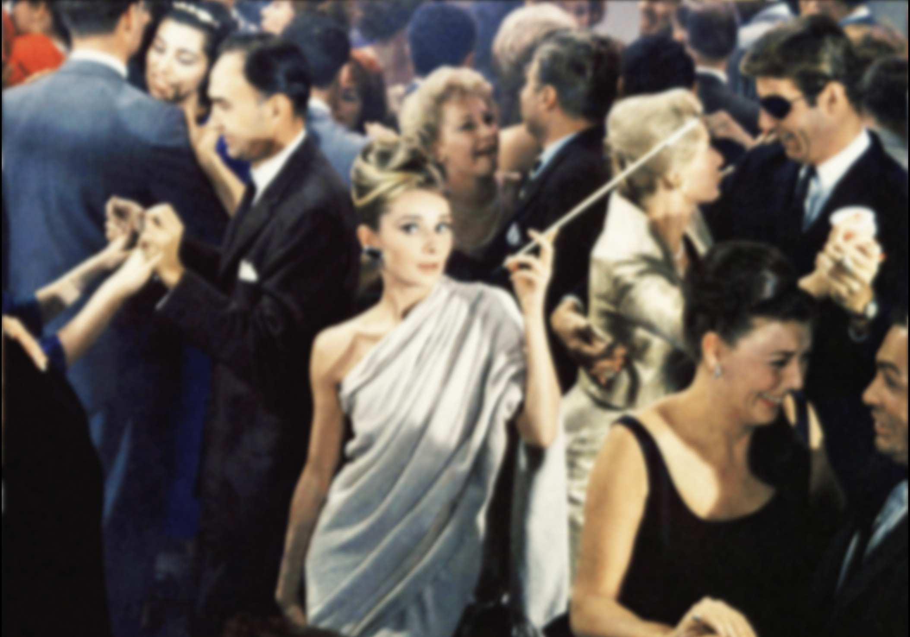
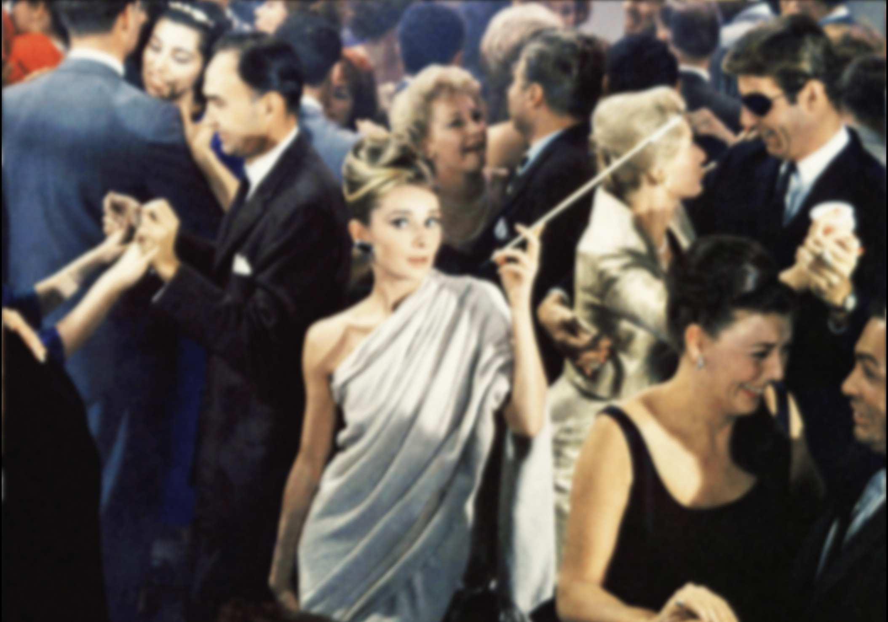
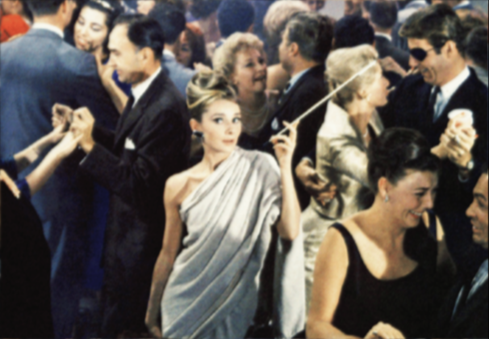
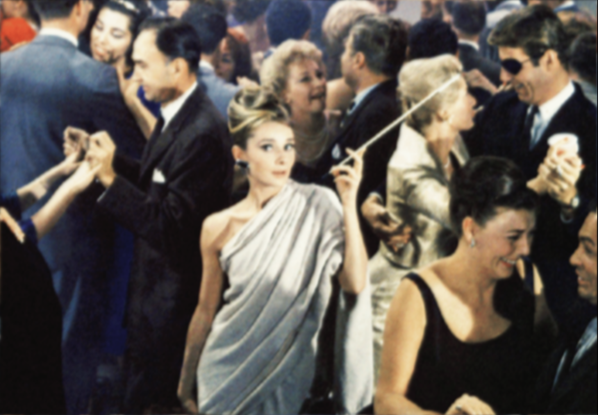

Image Blur Logic
In this tutorial we will explain the logic behind the box blur method, which is just a simple way of blurring an image.
 

Main Idea
The basic idea of bluring an image is that for each pixel, we average it with its neighbors and the simplest way to achieve this idea is through a method called box blur.
Steps:
- Retrieve the values of the center pixel (current pixel) and its 8 neighbors
- Add them together
- Divide by the amount of pixels we just added (here we have 9)
- Assign the resulting value to the center pixel (the current pixel)
Convolution Kernel
In a box blur each neighbor pixel weighs the same in the resulting pixel (remember that in Image Processing, we are manipulating one pixel at a time) which means that we are multiplying each pixel by 1 before adding the together. In other words, they all weigh the same. We can set the weight of each pixel inside a matrix. We call this matrix a convolution kernel.
Using kernels to store ratios allows you easily alter the weight distribuition later on. Different weight distribuitions will result in different blurs.
Vocabulary:
| Kernel | In image processing, a kernel is a small matrix that includes the ratios that you multiply each pixel in the neighborhood by. |
| Convolution | Convolution is the process of addidng each element of the image to its local neighbors, weighted by the kernel |
Implementation
Step by Step based on Matrix:
- The first step consists of retrieving the values within the convolution kernel
- Add all numbers in the kernel
- Divide by the amount of pixels added, which means we are dividing by the area (width * height) of the kernel
- Perform the steps above three times, one for each of the RGB values
- Assign the results to the RGB values of the center pixel
/*
* BOX BLUR IMPLEMENTATION
* We want you to have control of the blur, so we used the noLoop() method and
* the mousePressed function so that you could run the sketch step by step.
* Everytime you click your mouse the image will blur more and more.
*/
var img;
function preload() {
img = loadImage(imglist.audrey); // insert your own image here!
}
function setup() {
createCanvas(img.width, img.height);
pixelDensity(1);
}
function draw() {
background(0, 0, 0);
var k1 = [[1, 1, 1],
[1, 1, 1],
[1, 1, 1]];
img.loadPixels();
var w = img.width;
var h = img.height;
for (var x = 0; x < w; x++) {
for (var y = 0; y < h; y++) {
var ul = ((x-1+w)%w + w*((y-1+h)%h))*4; // location of the UPPER LEFT
var uc = ((x-0+w)%w + w*((y-1+h)%h))*4; // location of the UPPER CENTER
var ur = ((x+1+w)%w + w*((y-1+h)%h))*4; // location of the UPPER RIGHT
var ml = ((x-1+w)%w + w*((y+0+h)%h))*4; // location of the LEFT
var mc = ((x-0+w)%w + w*((y+0+h)%h))*4; // location of the CENTER PIXEL
var mr = ((x+1+w)%w + w*((y+0+h)%h))*4; // location of the RIGHT
var ll = ((x-1+w)%w + w*((y+1+h)%h))*4; // location of the LOWER LEFT
var lc = ((x-0+w)%w + w*((y+1+h)%h))*4; // location of the LOWER CENTER
var lr = ((x+1+w)%w + w*((y+1+h)%h))*4; // location of the LOWER RIGHT
p0 = img.pixels[ul]*k1[0][0]; // upper left
p1 = img.pixels[uc]*k1[0][1]; // upper mid
p2 = img.pixels[ur]*k1[0][2]; // upper right
p3 = img.pixels[ml]*k1[1][0]; // left
p4 = img.pixels[mc]*k1[1][1]; // center pixel
p5 = img.pixels[mr]*k1[1][2]; // right
p6 = img.pixels[ll]*k1[2][0]; // lower left
p7 = img.pixels[lc]*k1[2][1]; // lower mid
p8 = img.pixels[lr]*k1[2][2]; // lower right
var red = (p0+p1+p2+p3+p4+p5+p6+p7+p8)/9;
p0 = img.pixels[ul+1]*k1[0][0]; // upper left
p1 = img.pixels[uc+1]*k1[0][1]; // upper mid
p2 = img.pixels[ur+1]*k1[0][2]; // upper right
p3 = img.pixels[ml+1]*k1[1][0]; // left
p4 = img.pixels[mc+1]*k1[1][1]; // center pixel
p5 = img.pixels[mr+1]*k1[1][2]; // right
p6 = img.pixels[ll+1]*k1[2][0]; // lower left
p7 = img.pixels[lc+1]*k1[2][1]; // lower mid
p8 = img.pixels[lr+1]*k1[2][2]; // lower right
var green = (p0+p1+p2+p3+p4+p5+p6+p7+p8)/9;
p0 = img.pixels[ul+2]*k1[0][0]; // upper left
p1 = img.pixels[uc+2]*k1[0][1]; // upper mid
p2 = img.pixels[ur+2]*k1[0][2]; // upper right
p3 = img.pixels[ml+2]*k1[1][0]; // left
p4 = img.pixels[mc+2]*k1[1][1]; // center pixel
p5 = img.pixels[mr+2]*k1[1][2]; // right
p6 = img.pixels[ll+2]*k1[2][0]; // lower left
p7 = img.pixels[lc+2]*k1[2][1]; // lower mid
p8 = img.pixels[lr+2]*k1[2][2]; // lower right
var blue = (p0+p1+p2+p3+p4+p5+p6+p7+p8)/9;
img.pixels[mc] = red;
img.pixels[mc+1] = green;
img.pixels[mc+2] = blue;
img.pixels[mc+3] = img.pixels[lc+3];
}
}
img.updatePixels();
image(img, 0, 0, img.width, img.height);
noLoop(); // we want you to have control of the blur
}
function mousePressed() {
redraw(5); // press mouse to blur image even more!
}
More Methods
Box Blur
Gaussian Blur 3x3
 

Gaussian Blur 5x5